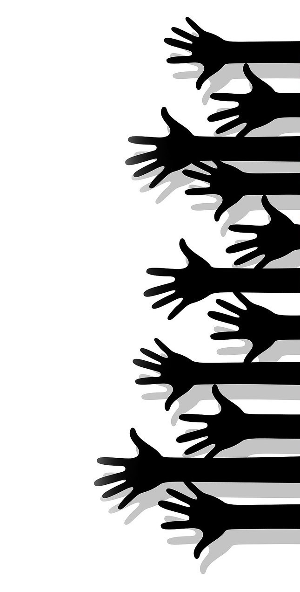

Volunteer Experience
- Heart and Stroke Foundation 2008
- Volunteered in the Heart Month Campaign for collecting donations
- Solutions Society at Seaquam – volunteering for fundraisers and school events
- Student Council Seaquam – volunteering for school events
- Math4Me as a tutor for young children
- Homework Club Tutor at school for international students
- Volunteer for Seaquam Seafast event
- Volunteer in 2014 for Operation Green Club
- Volunteer at Little Footprints Daycare July – December 2015
- Volunteer at Science World February – April 2015
Clubs
- Co-Founder and Executive member of Make The Choice Organization
- Participated in Debate and Model UN 2014 - 2016
